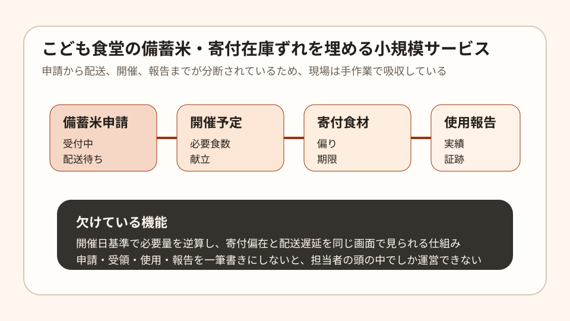

Question Note
こども食堂の備蓄米・寄付在庫のずれを埋める小規模サービス案

農林水産省は2026年度も、こども食堂向けの政府備蓄米申請を受け付けていますが、 申請件数の大幅増加により、審査完了後の配送まで2か月程度かかる場合があると案内しています。 一方で、むすびえによる2025年度確定値では、全国のこども食堂は 1万2,602カ所まで増えました。
つまり現場は増えているのに、米や寄付食材の到着タイミングは揺れます。課題は「食材がない」だけではなく、 いつ届くか読めない、献立にどう当てるか見えない、報告が別管理という運営の分断です。
どの社会問題を切り出すか
こども食堂全体を支える巨大プラットフォームを個人で作るのは無理があります。そこで狙いを 地域ネットワークに属する小規模団体の在庫・開催調整に絞ります。
| 現場課題 | 何が起きるか | 既存手段の限界 |
|---|---|---|
| 備蓄米が届く日が読みづらい | 開催回ごとの献立や配付量が直前まで決まらない。 | 表計算は更新できても、配送見込みと開催日が自動ではつながらない。 |
| 寄付食材に偏りが出る | 米はあるが副菜が足りない、または逆になる。 | チャットでは余剰・不足の全体像が残らない。 |
| 使用報告が別作業 | 現場運営の後に、証跡整理が担当者の残業になる。 | 汎用在庫アプリは、行政向け報告の粒度に合いにくい。 |
既存のシステムで足りない点
- LINEやメールは寄付募集には使えるが、開催回ごとの必要量計算や履歴化が弱い。
- 一般的な在庫アプリは企業物流向けで、米の受給申請や食育報告の文脈を持っていない。
- スプレッドシートは柔軟だが、担当者交代時に運用が属人化しやすい。
あると良い機能
- 備蓄米の申請日、審査中、配送見込み、受領量を1画面で追える。
- 開催日ごとに必要食数を入れると、米・副菜・不足カテゴリを自動で逆算する。
- 寄付食材を「余っているもの」「足りないもの」で色分けし、募集文を自動生成する。
- 受領から使用、配付、報告まで時系列で残し、後でCSVやPDFに出せる。
- アレルギーや賞味期限など、現場が本当に怖い注意点だけを軽く持てる。
100万円規模に抑えた市場設定
全国1万超を相手にするのではなく、初年度は 2県程度の地域ネットワークに所属する200団体を到達可能市場と仮定します。 ここから8%を獲得する前提なら、個人でも面談とサポートが回せます。
| 項目 | 仮定 | 結果 |
|---|---|---|
| 到達可能団体数 | 200団体 | 地域ネットワーク経由で接点を持てる範囲 |
| 初年度シェア | 8% | 16団体 |
| 月額利用料 | 5,000円/団体 | 960,000円/年 |
| 導入支援 | 10,000円 x 6団体 | 60,000円 |
| 初年度売上予想 | 合計 | 1,020,000円 |
ここでの「市場規模」は全国TAMではなく、個人で扱える実行可能市場です。 100万円前後に抑えることで、サポート品質を落とさずに回せます。
収益モデル
- 基本: 団体ごとの月額利用料
- 追加: 初期設定代行、在庫テンプレート作成
- 追加: 地域ネットワーク単位の導入説明会
寄付マッチングの成功報酬モデルも考えられますが、寄付額が不安定なので、初期は 運営効率化に対する固定課金の方が読みやすいです。
必要なシステム要件と支出
| 領域 | 要件 | 年額の目安 |
|---|---|---|
| フロント | スマホで在庫更新しやすいWeb画面 | 0円〜 |
| バックエンド | 団体、開催回、在庫、寄付、申請、報告の管理 | 36,000円 |
| 通知 | メール中心、必要時だけSMS | 12,000円 |
| 帳票出力 | CSV、PDF、簡易監査ログ | 12,000円 |
| ドメイン等 | 独自ドメイン、監視、バックアップ | 18,000円 |
| 年間固定費 | 合計 | 78,000円前後 |
必要人数と人材要件
この規模では、実行者1名が前提です。必要なのは大人数ではなく、現場理解と実装力の両立です。
- 実行者: Webアプリを実装でき、NPOや地域団体との会話が苦にならない人
- 補助外注: 会計、法務確認、アクセシビリティ点検を単発依頼
- 望ましいスキル: CRUD実装、帳票設計、在庫UI、業務整理、地域連携の調整力
結論
このテーマは、寄付を増やすよりも先に、 届く時期がずれる前提で運営を整える方向に切ると小さく成立します。 こども食堂全体の巨大基盤ではなく、地域ネットワーク向けの軽量運営ツールなら、100万円規模でも回せます。